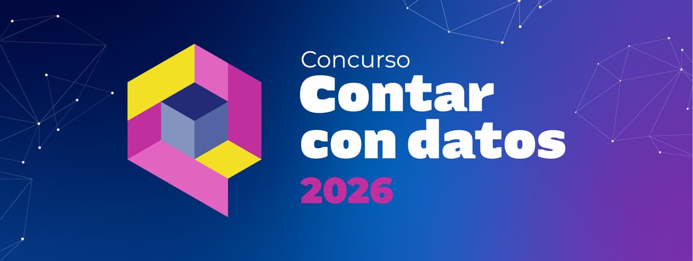

Arterias de Cristal
Topología y resiliencia de la matriz TIC en Chaco
Análisis territorial interactivo sobre el despliegue físico de infraestructura, concentración logística de fibra óptica y evaluación táctica de vulnerabilidad de red.
Organizan y Avalan